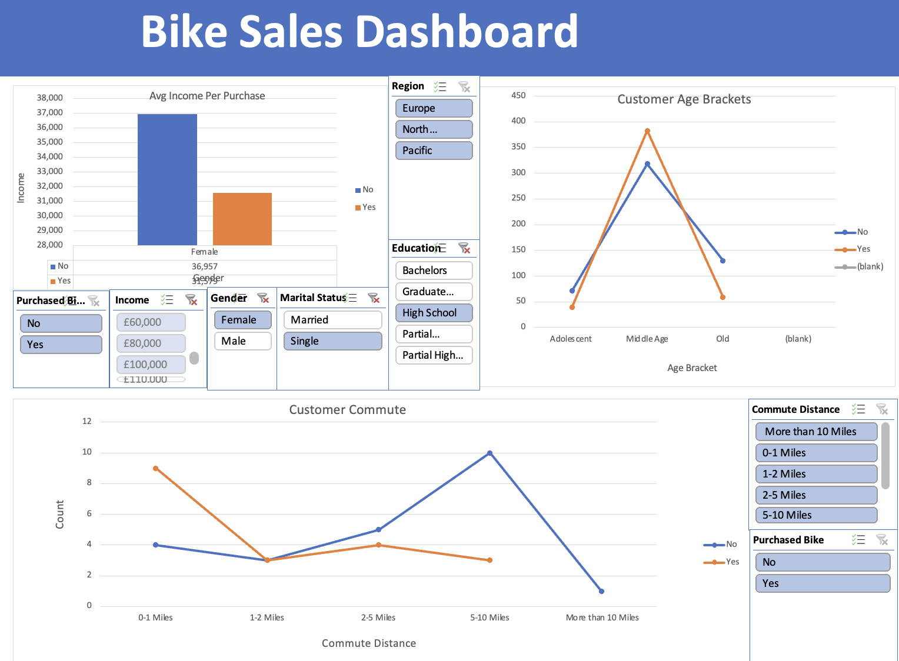
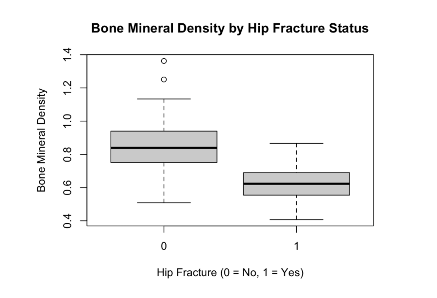
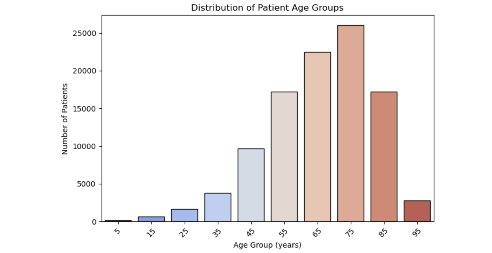
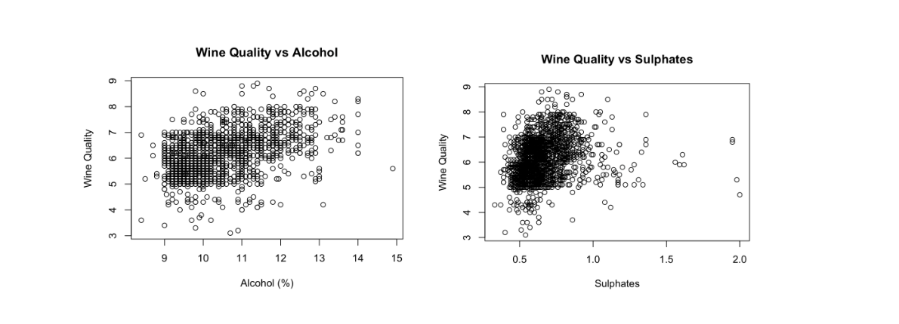

In this project, I explore clinical data from intensive care patients admitted to five US medical centres.
The analysis focuses on assessing data quality, cleaning and preparing the dataset, and conducting
exploratory data analysis to identify patterns and outliers relevant to patient care and outcomes.
Tools used: Python (Pandas, NumPy), Matplotlib, Seaborn

Excel Bike Sales Dashboard

Interactive Excel dashboard analysing bike purchase behaviour by demographics,
income, and commute distance using pivot tables and charts.
Tools: Excel, Pivot Tables, Slicers, Data Visualisation
MySQL Layoffs Data Analysis

SQL project analysing global layoffs data using MySQL. Includes data cleaning,
aggregations, CTEs, and window functions to identify trends by company and year.
Tools: MySQL, CTEs, Window Functions, Data Cleaning
Hip Fracture Risk (Logistic Regression)

Logistic regression analysis in R exploring the relationship between bone mineral density (BMD)
and hip fracture risk, including model fitting and visualisation of predicted probabilities.
Tools: R, Logistic Regression, Data Visualisation
Diabetes Exploratory Data Analysis (Python)

Exploratory data analysis of a diabetes dataset using Python.
This group coursework project focused on understanding patient
demographics and clinical patterns; my contribution included
data cleaning, visualisation, and analysis.
Tools: Python, Pandas, NumPy, Matplotlib, Seaborn
Wine Quality Exploratory Data Analysis (R)

Exploratory data analysis of a red wine quality dataset using R.
The analysis examines relationships between physicochemical variables
(such as alcohol, sulphates, and volatile acidity) and wine quality
using summary statistics and visualisations.
Tools: R, Data Visualisation, Exploratory Data Analysis
Data Professional Survey Dashboard (Power BI)

Interactive Power BI dashboard analysing survey data from data professionals,
exploring job roles, salary trends, programming language preferences, and
satisfaction with work-life balance.
Tools: Power BI, Power Query, DAX, Data Visualisation